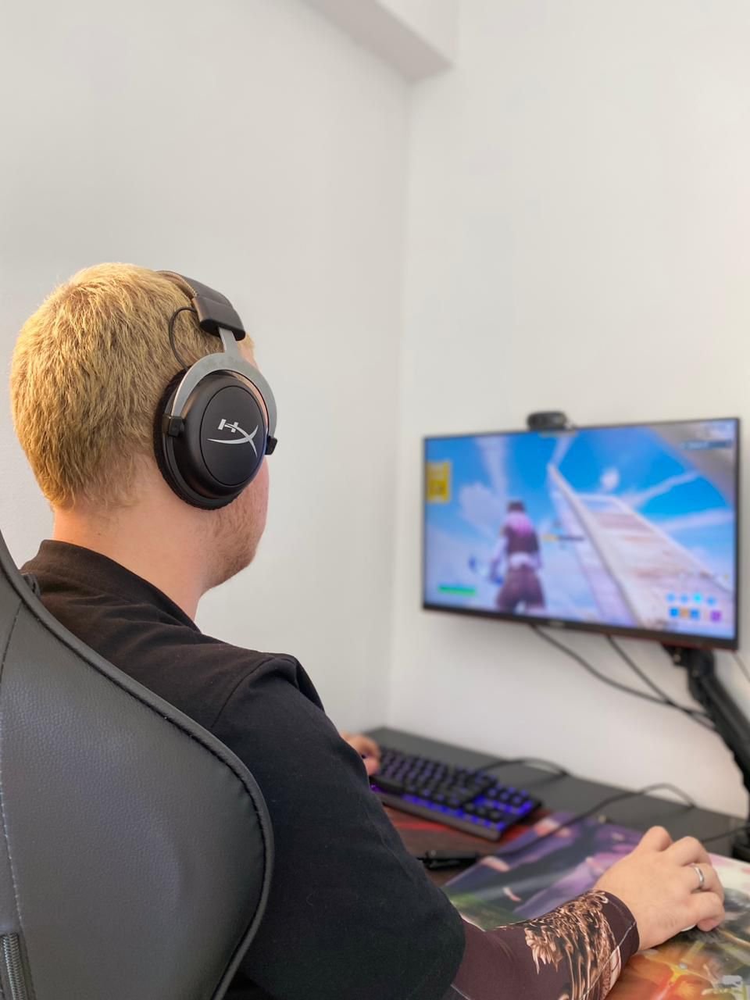
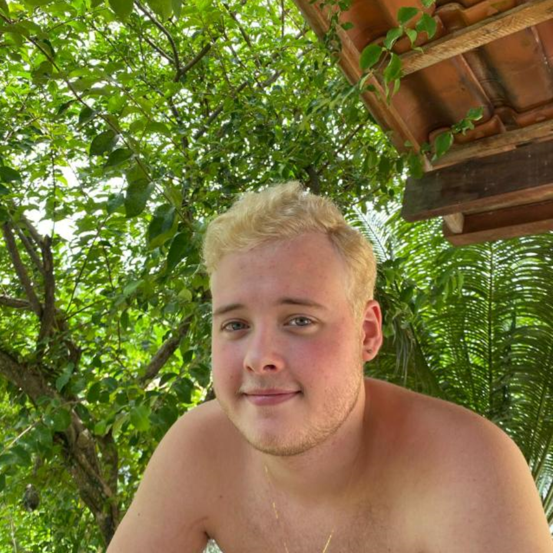
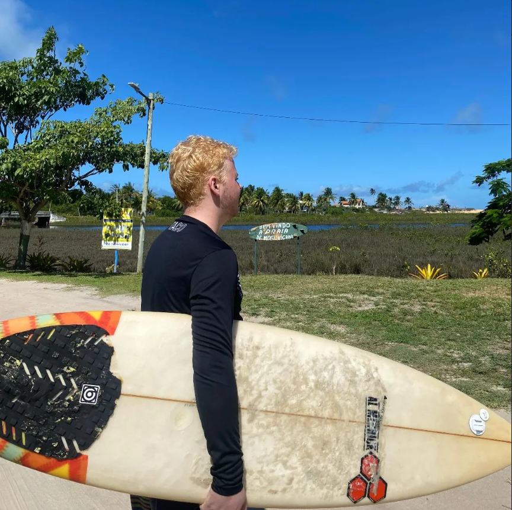

Seja bem-vindo ao meu Portfolio
Eduardo Capdeville
Sobre mim
  Me chamo Eduardo Capdeville, tenho 18 anos. Gosto muito de jogar jogos de FPS (First Person Shooter) no computador. Faço faculdade de Engenharia de Software na Uninter desde 2023. Além disso, realizo projetos pessoais para praticar o que aprendo na faculdade e nos cursos que faço na Alura. Nunca fiz curso de inglês formalmente; aprendi a falar e escrever em inglês apenas jogando e assistindo videos em inglês. Atualmente, possuo um nível intermediário-avançado na língua. Estudei na ACM da Ilha do Governador do primário até o 4º ano. No 5º ano, ingressei na Edel, também na Ilha do Governador, onde permaneci por apenas um ano. Depois, ingressei no MV1, na Ilha do Governador, onde estudei até o 1º ano do ensino médio. No 9º ano, conheci o amor da minha vida: Luana Alves. Namoramos desde então e planejamos nos casar. No 2º ano do ensino médio, mudei-me para Petrópolis, no Rio de Janeiro, e estudei no Colégio de Aplicação da Universidade Católica de Petrópolis por um ano. Após esse período, mudei-me novamente, desta vez para Cabo Frio. Devido à pandemia, continuei meus estudos no mesmo colégio por meio do ensino a distância. Durante as férias entre o 2º e o 3º ano do ensino médio, mudei-me novamente, agora para Rio das Ostras. Lá, concluí o 3º ano do ensino médio no Colégio RH Positivo/Bahiense. Foi um período desafiador, no qual tive dificuldade de me adaptar e me senti perdido em relação ao meu futuro. No entanto, ao final desse ano, descobri minha paixão pela programação. Comecei a realizar projetos por conta própria e, no início de 2023, ingressei na faculdade de Engenharia de Software na Uninter, onde tenho estudado com muito entusiasmo desde então.
Projetos
Possuo diversos projetos no GitHub. Clique no ícone para ver mais.